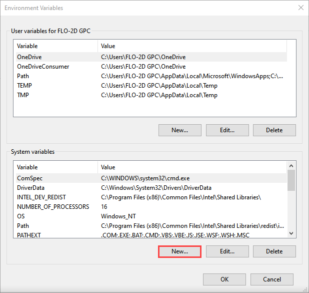
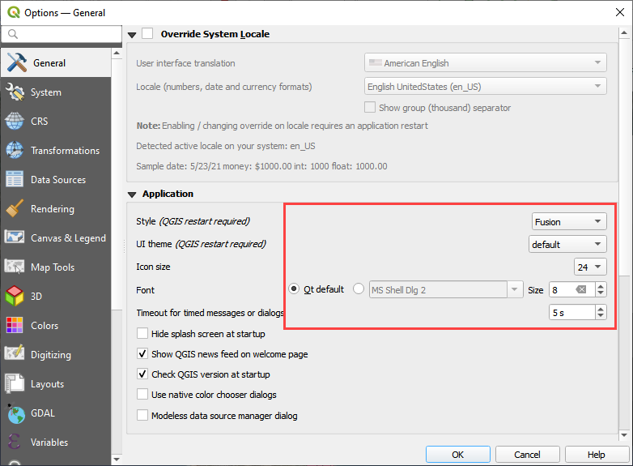
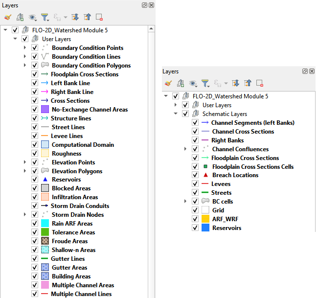
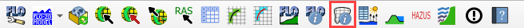
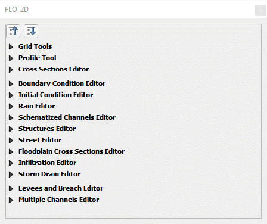

View Options¶
Screen Resolution Problems¶
If the computer has a high-definition resolution or ultra-high-definition resolution, QT creator and QGIS may need an adjustment so all windows can be loaded correctly.
For QT Creator Windows
If the data in Widgets and Dialog Boxes is squeezed or not readable, set the Environmental Variables for QT Creator scaling factor, on the Advanced tab of the System Properties window, following the figures shown below. Set the Environmental Variables for the System not the user.
Open Control Panel and search for System Properties. Click the Environmental Variables button.
Click the New button for System Variables. Add the new variable as shown below.
For QGIS, navigate to Settings > Options > General and set the icon size to 24 and the text size to 8. Try a few different combinations to optimize the display.
If any parts of the Pugin are missing, they can be retrieved using the View menu or by right clicking the Toolbar area.
Plugin Toolbar¶
The FLO-2D Plugin toolbar is located on the QGIS toolbar lower tier. If the toolbar is missing, follow the FLO-2D Plugin installation instructions or use the View menu to load it onto the QGIS Toolbar menu.
Plugin Layers¶
The FLO-2D Layers are loaded into the QGIS program when the user creates a GeoPackage. These layers are grouped into categories such as User Layers that can be edited and Schematic Layers that are written when data is schematized. There are also Storm Drain Layers, Infiltration Layers, Data Tables and Channel Layers. All the data is stored as SQLite data in a GeoPackage file.
If the Layers Panel is missing, use the View Menu to display it. This window can be docked or undocked by clicking and dragging the title area. In the following images, the Layers and Browser panel were docked together by dragging one panel onto the other.
Close the Browser panel or dock both Layers and Browser together so layers can be easily viewed.
FLO-2D Grid Info Panel¶

The FLO-2D Grid Info button is used with the FLO-2D Grid Info Panel. Click the button and then click any cell to fill the grid element information.
Enter a grid element number and click the Eye button. The map will zoom to that element and highlight it with yellow.
If the panel is missing, show it using the View>Panels>FLO-2D Grid Info Panel.
FLO-2D Widgets¶
The editor widget is used to digitize the User Layers. If the windows are missing, show them using the View>Panels>FLO-2D Panel.
FLO-2D Plot and Table Editor Windows.¶
The plot window and table editor window are used to assign table data to various components such as inflow, rain, hydraulic structures, and channels. The user can copy and paste from excel or ASCII text files. If these windows are missing, they can be restored using the View Menu and they can be docked or shifted to other monitor screens for easy editing and viewing.